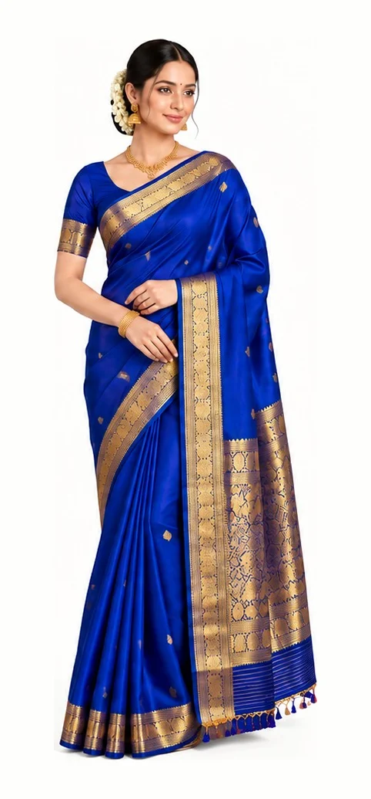
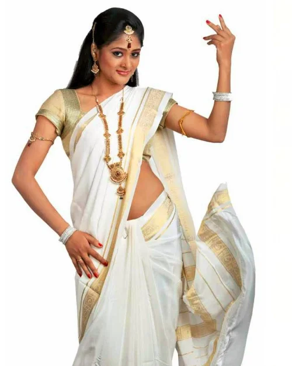
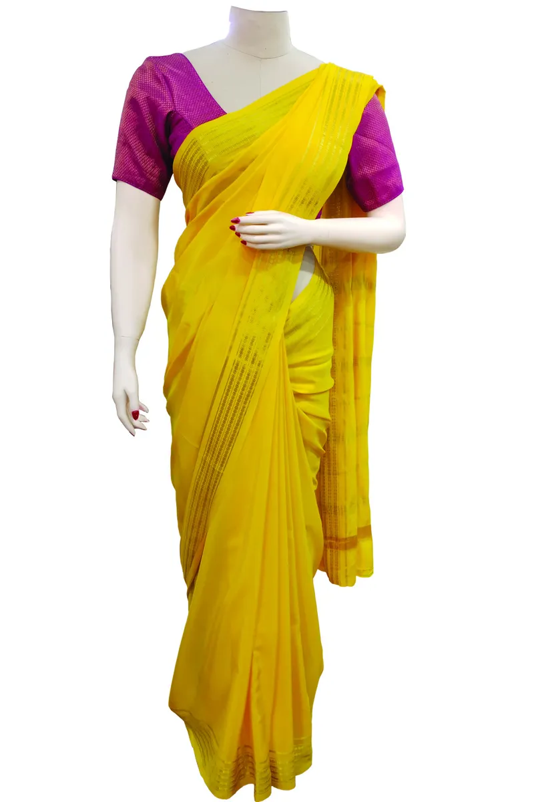

Shop by category
Find your weave
New arrivals
Latest from the looms
Shop by price
A Mysore silk for every budget

Weddings & festivals
Silk for every ceremony
From muhurtham mornings to Dasara evenings — sarees that hold their colour and drape for decades, with KSIC's assurance of pure silk.
Explore the collectionMost coveted
Heirloom & signature sarees
Explore by design
31 designs on our looms
Each article is woven in several designs. Pick one to see the full saree.
Our heritage
The house of Mysore Silk
Since 1912
A royal loom, still weaving
In 1912, Maharaja Krishnaraja Wadiyar IV of Mysore set up a silk weaving factory to supply the royal household. It grew into Karnataka Silk Industries Corporation — KSIC — a Government of Karnataka enterprise that still weaves every Mysore Silk saree it sells.
Every saree is pure mulberry silk with pure gold zari. Mysore Silk is protected by a Geographical Indication, so the name can only be used for silk woven to this standard.

Founded in Mysore under the Maharaja's patronage
Geographical Indication for Mysore Silk
Pure mulberry silk
Warp and weft are both pure silk — never art silk or blends.
Pure gold zari
Borders and pallus finished with genuine gold zari.
Government owned
Woven and sold by a Government of Karnataka enterprise.
KSIC showrooms in Karnataka & Hyderabad
Find a showroomSilk guide
Know it. Keep it.
How to tell pure silk from imitation, and how to care for it so it lasts a lifetime.
Identify pure silk
The burning test
Not everything that shines is silk — "art silk" and other glamorous names are not natural silk. 100% silk means both warp and weft are pure silk yarn. You can test it anywhere:
- Pull a threadFrom both the warp and the weft.
- Burn itPure silk smells of burning hair.
- Check the ashA black residue that crushes to powder.

Washing
- Wash in soft, lukewarm water with a neutral soap. Add a pinch of borax if the water is hard.
- Knead and squeeze gently; rinse 2–3 times in warm water.
- Add a few drops of citric or acetic acid to the final cold rinse.
- Squeeze lightly by hand. Always dry flat, in shade.
Ironing
- Low to medium heat.
- Never spray water on silk — it spots.
- Iron damp silk on the reverse side.
Storing
- Keep clean and dry; air and brush periodically during long storage.
- Protect from insects, dust, moisture and light, and avoid direct contact with wood.
- Wrap zari sarees in cotton cloth and keep silica sachets in the rack.
Need help?
Ask a KSIC silk expert
+91 80 2558 6402
For you